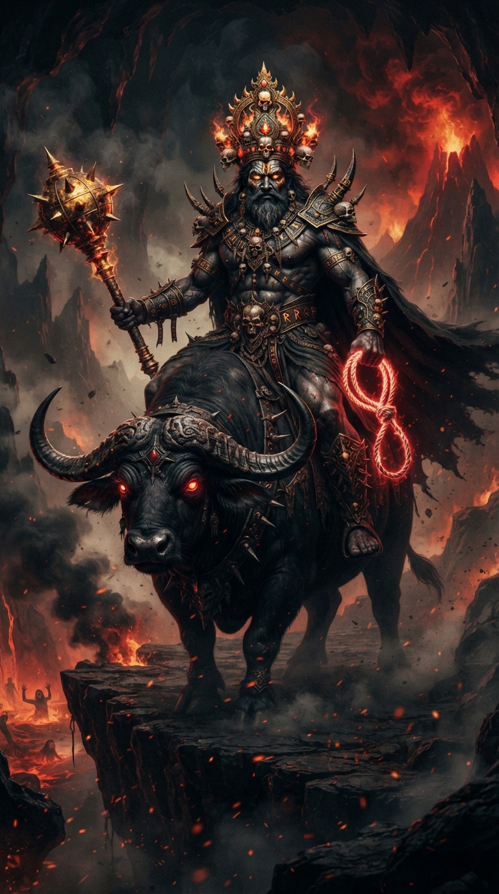
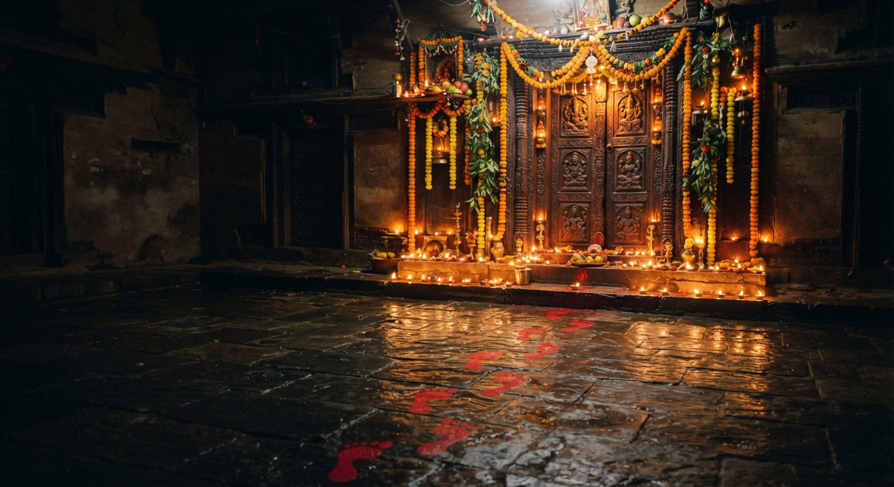

[ PAGE 01 / 14 — यमपञ्चक ]
//
YAMARAJ · GOD OF DEATH VS. SIBLING BOND

FIVE NIGHTS OF DIYAS
✦ तिहार
🪔 शुभ दीपावली · YAMAPANCHAK 🪔
[ 01 / 14 ] · TIHAR: यमपञ्चक (YAMAPANCHAK)
The Story
The Story
of Tihar
Tihar is also known as यमपञ्चक (Yamapanchak)—meaning the five sacred days associated with Yamaraj, the God of Death, where death itself gets challenged by the eternal relation of brother and sister.